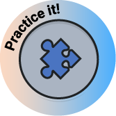

Nesta situação de aprendizagem, você aprenderá a:

What can you see in the picture?
What are your previous experiences in the IT area? Have you worked with it before?
You are going to play two truths and a lie. Think of situations that happened in your journey with IT. Make three sentences, two must be true and one must be false.
Share the sentences with the big group. Your classmates need to guess which of your sentences are true, and which one is false.
How many logos can you see? Do you know all their names?
Can you share your experiences with software or websites?
What software/websites do you use?
Do you know what the initial stages of making a software writing process are?
You are going to learn about the initial stages of software writing and website development processes. Read the headlines in the chart and write them in the blank spaces according to the given information.
Think of websites that start with the following letters:
A: _____________________ H: _________________________
G: ____________________ N: _________________________
What websites do you use most?
Look at some elements from a website. Do you know all of them?
In pairs or in groups, choose a website and present the elements you see.
Logo / social media icons / about us / menu
Read the dialogue and check in the box below the words you see:
( ) website architecture ( ) schedule ( ) navigation
( ) design the layout ( ) internet ( ) connected

Look at the sentence extracted from the text: “it can be made simpler for everyone”.
Do you know what is Andrew’s idea when he says that?
The sentence “it can be made” is written in the passive voice. Do you know how to use this tense? What’s the meaning of it?
Look at the chart below and observe its usage.
|
PASSIVE VOICE – SIMPLE PRESENT: In the passive voice, the thing receiving the action is the focus. We don't always say who did the action. For example, "The cake was eaten" is passive because we focus on the cake being eaten, not who ate it. |
|
|---|---|
|
Active Voice: the subject of the sentence performs the action expressed by the verb. |
Passive voice: Tells us what is done to someone or something. |
|
The structure is usually: Subject - Verb - Object. |
The structure is usually: Object - Verb – Subject. |
|
Examples: The girl takes a selfie. The girl doesn’t take selfies. The girls take selfies. Do the girls take a selfie? |
Examples: A selfie is taken by the girl. Selfies aren’t taken by the girl. Selfies are taken by the girls. Is a selfie taken by the girls? |
Group activity:
Look at the picture and analyse it. What is it? How can you describe the image?
Have you ever told a story to someone about when you were talking about a food you wanted to eat, a product you wanted to buy or even a course you wanted to and suddenly this thing appeared on your TV, YouTube or even apps?
Can you share a story about it?
Do you know what an algorithm is?
Can you give an example of an everyday algorithm?
How do algorithms help to improve websites?
Algorithm is related to one of the programming steps. Programming is like learning the ABCs of computers. It helps you write instructions for the computer to follow and solve problems. One important thing in programming is called variables. They're like containers that hold different kinds of information.
Organize the basic ideas in programming: (Parte 1)
Why are variables important? (Parte 2)
Variables: Variables are like boxes used to hold and change information in a program. They can keep different kinds of data, like numbers, words, or complicated things.
Data Types: Data types decide what kind of data is kept in variables, such as whole numbers, numbers with decimal points, words, and lists.
Control Structures: Control structures control how a program runs, letting developers make choices, repeat actions, and organize code clearly.
Functions and Procedures: Functions and procedures are parts of code that can be used again and again to do specific tasks. They help keep code neat and easy to use by putting tasks into small parts, making it simpler to fix and expand programs.
Comments and Documentation: They are important for making code easy to read and understand. They let programmers explain their code with notes, instructions, and tips, which helps people work together and share knowledge.
Store Data: Variables can keep different kinds of data, from simple numbers and letters to complicated lists and groups.
Change Data: By giving values to variables and doing things with them, developers can change data easily, like doing math, transforming information, and working with data.
Give Flexibility: Variables make programs flexible, so they can react to changes, user actions, and outside events. They help programmers make code that can handle many different situations and needs.
Speaking activity: In pairs or in groups use the correct time conjunctions:
Match the pairs. Find the definitions and their names:
Plan: establish the objectives and processes necessary to deliver results in accordance with the organisation’s safety policy.
Do: implement the process.
Act: take actions to continually improve safety performance.
Check: Monitor and measure processes against safety policy, objectives, legal and other requirements, report the results.
Instruction:
Giovanna is explaining the basic steps involved in project management in software development, focusing on the PDCA explanation. Read it and after, answer the questions:
In software development projects, there are steps to follow to finish the work.
First, we plan what needs to be done. This means deciding what the software will do and when it should be ready.
Then, we organize the tasks. This is like making a list of everything we need to do and who will do each thing.
After that, we start working on the tasks. This is when we create the software. While we work, we need to talk to each other and make sure everyone knows what they should do. If we find any problems, we try to fix them quickly.
Finally, when everything is done, we check if the software works correctly and if it meets the needs of the people who will use it. If everything is okay, the project is finished!
Find the 5 words from the chart in the wordsearch:
Read the text below and pay attention to the project which was developed by Sarah, Alex and James.
Sarah, Alex, and James have been working hard to make a website. They've had to figure out a lot of tricky problems, like how to make everything work right and how to make sure the site is safe for pets.
|
Project Title: Virtual Pet Care App |
|
Scenario: In a busy city where more people are getting pets, but they're finding it hard to take care of them because they're so busy, a group of people who love animals has a great idea: a Virtual Pet Care website. I am Sarah and I love animals. I’m always busy with my job and struggles to take care of the pets. My team is completed with my friend Alex, who's good at making things look nice, and James, who knows a lot about making websites. Together, we want to make an app that helps pet owners take better care of their pets and feel connected to other pet lovers. |
|
The Virtual Pet Care Website will do lots of things:
|
Group activity: based on the text you read before, you and your team are going to create a website’s project. Complete the chart below with the information you decided together.
Create a title for your website. Introduce who is going to work on your website and what their occupations are. Show what your website has to offer. After that, present your project to the big group:
|
Project Title: |
|
Scenario: |
|
The website will do lots of things: |